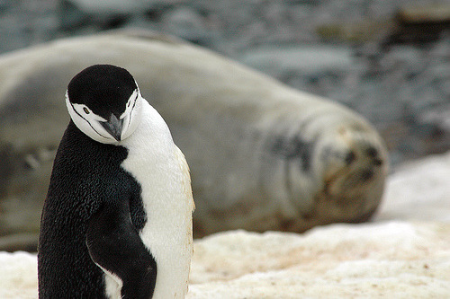
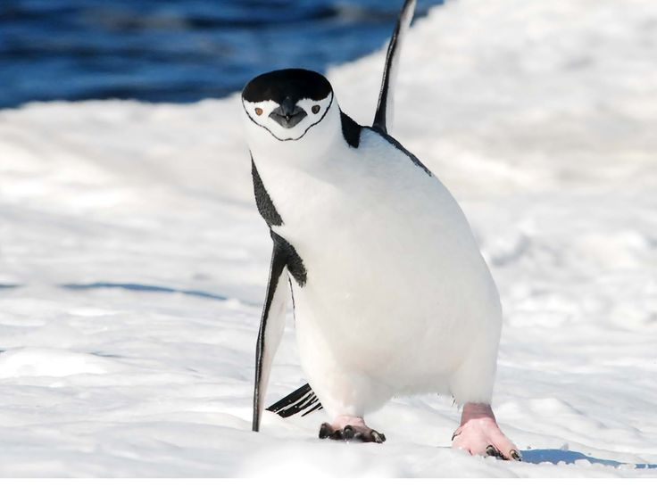
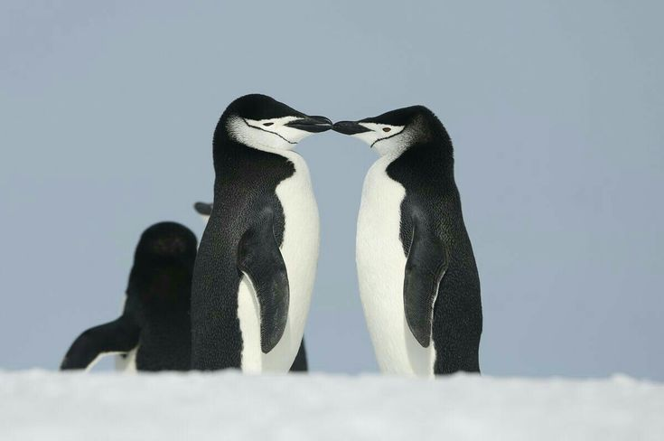
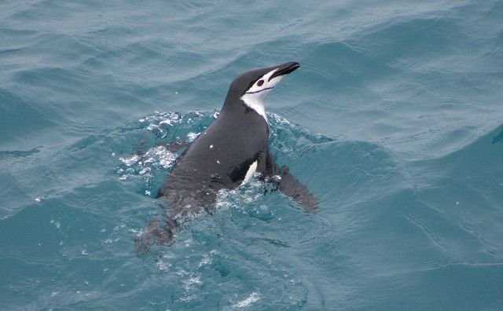
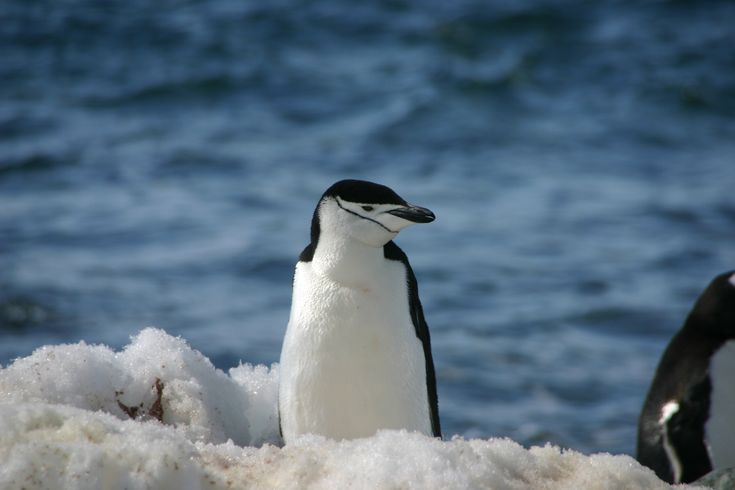
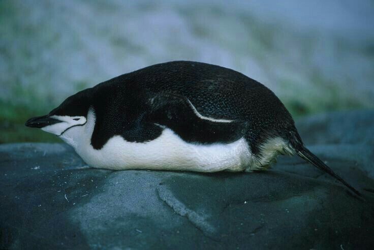

Pingüino Barbijo
Pygoscelis antarcticus
Reciben su nombre por la fina y distintiva línea negra que cruza por debajo de su cara, haciéndolos parecer como si llevaran un pequeño casco negro abrochado.
Reciben su nombre por la fina y distintiva línea negra que cruza por debajo de su cara, haciéndolos parecer como si llevaran un pequeño casco negro abrochado.



68 — 76 cm
3.2 — 5.3 kg
Península Antártica
Exclusivamente Krill



